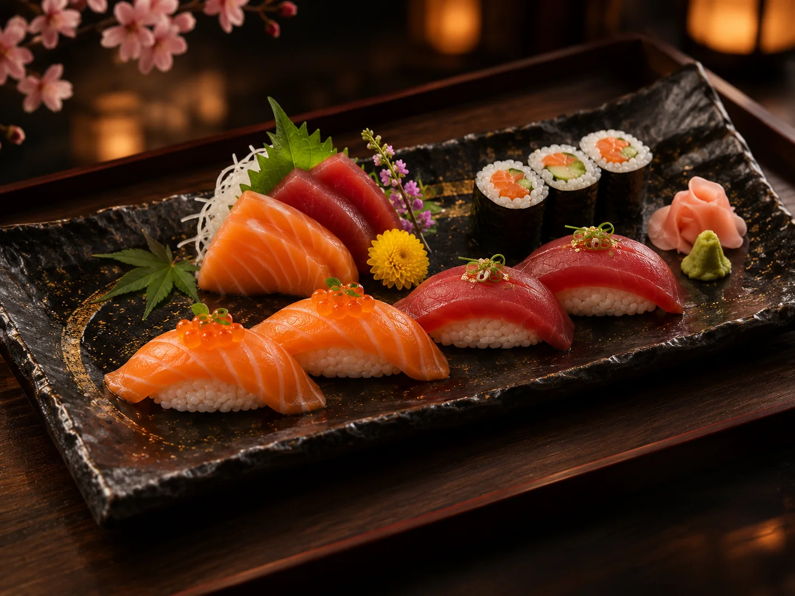

注文
ВАШ ВЫБОР
Корзина
Соберите состав вечера и проверьте итог.
Демо-оформление не списывает оплату и не передаёт заказ ресторану.
Учебная концепция · все бизнес-данные вымышленыTokyo Premium · учебная версия

Соберите состав вечера и проверьте итог.
Демо-оформление не списывает оплату и не передаёт заказ ресторану.
Учебная концепция · все бизнес-данные вымышлены